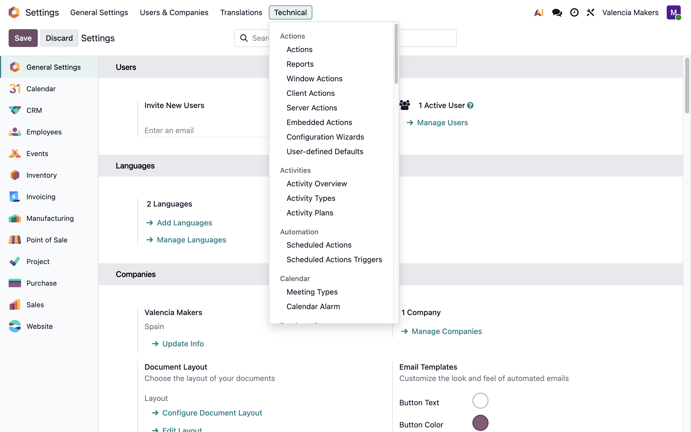
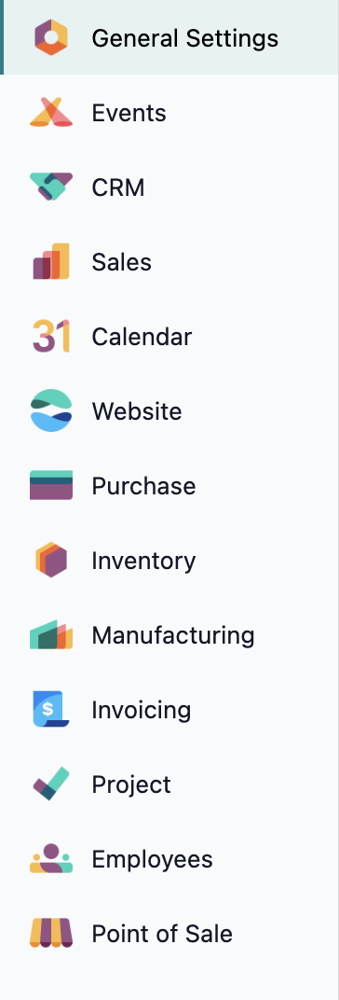
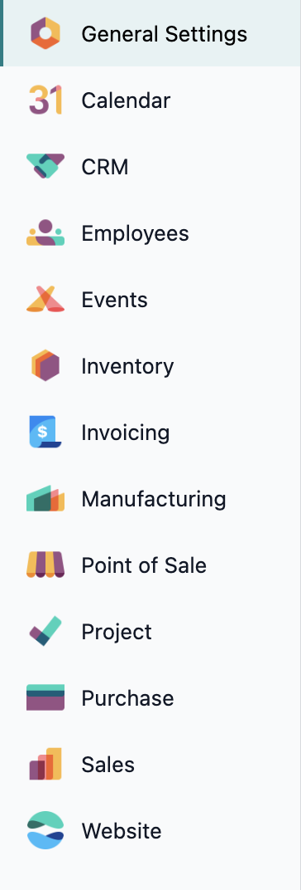
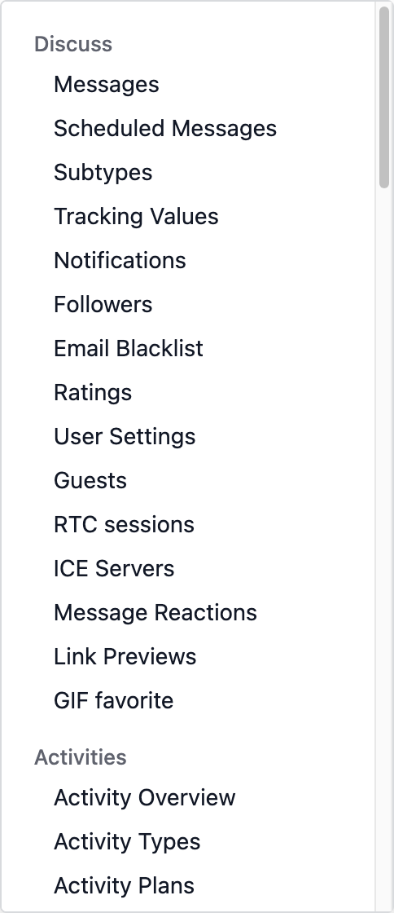
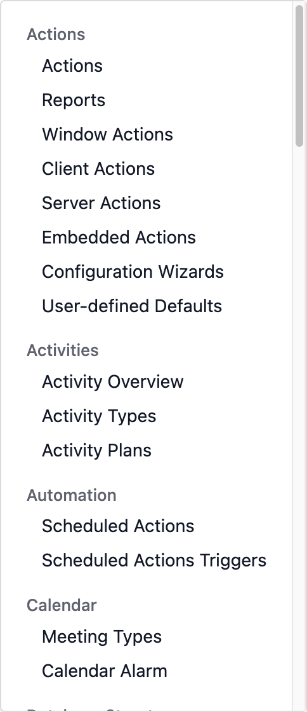

In standard Odoo, the Settings sidebar and the groups in the Technical menu appear in whatever order their modules happen to add them. Settings Sort sorts both lists alphabetically, while keeping General Settings at the top.
Sidebar, standard

Sidebar, sorted

Technical menu, standard

Technical menu, sorted

The settings page sidebar is sorted alphabetically, while keeping General Settings at the top.
The Technical menu groups are alphabetical; the items inside each group keep their order.
Both lists follow each user's own language setting.
Nothing is stored; uninstall the module and the original orders return.
Every setting and menu item stays exactly where it was; only the order of the sections and groups changes. The Technical menu is visible while the site is in developer mode.
This module only requires Odoo's base module, so it works with any set of apps, on both Community and Enterprise.